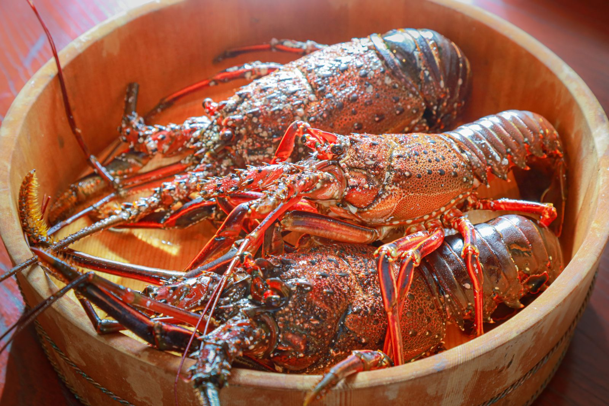
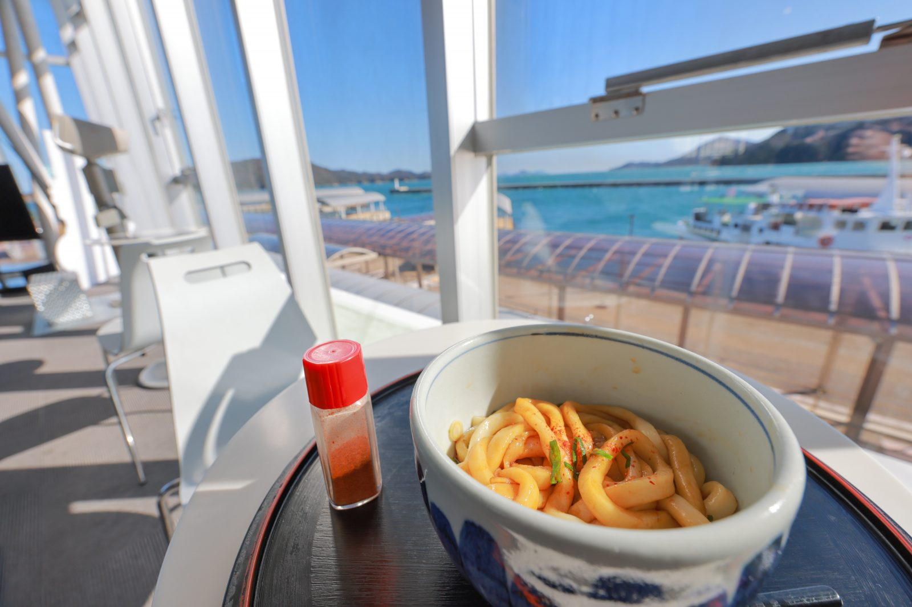

伊勢海老
房総半島以南の太平洋岸に分布し、三重県では志摩半島や東紀州で漁獲されている。
伊勢うどん
太くて柔らかい麺に、少量のたまり醤油と鰹出汁を使用して作られるタレをかけて食べるものが主流。
伊勢茶
三重県で生産されるお茶の総称であり、三重県産100%の緑茶。
房総半島以南の太平洋岸に分布し、三重県では志摩半島や東紀州で漁獲されている。
太くて柔らかい麺に、少量のたまり醤油と鰹出汁を使用して作られるタレをかけて食べるものが主流。
三重県で生産されるお茶の総称であり、三重県産100%の緑茶。